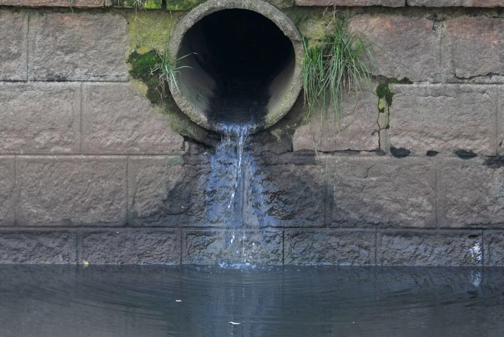

CLIENTES COMPRADOS

O que você precisa saber sobre o esgoto a céu aberto?
O esgoto a céu aberto é uma realidade para uma parcela considerável da população. De acordo com dados do Instituto Trata Brasil, quase 100 milhões de brasileiros não têm acesso ao serviço de coleta de esgoto e somente 49% de todo o esgoto gerado no país passa por algum tipo de tratamento. Do ponto de vista global, a situação não é muito melhor. Um relatório feito pela Organização Mundial de Saúde (OMS), em parceria com o Fundo das Nações Unidas para a Infância (UNICEF), indica que seis em cada dez pessoas no mundo não têm acesso a saneamento seguro. Neste post, vamos apontar os prejuízos desse cenário e o que pode ser feito para revertê-lo.
Porque a rede de esgoto é tão importante para a população?
Diante dos benefícios proporcionados por esse serviço, é difícil imaginar como metade dos habitantes do Brasil ainda tem que lidar com a ausência de coleta e tratamento de esgoto.
A falta de saneamento básico faz com que essas pessoas tenham sua saúde e qualidade de vida diretamente afetadas. Além de evitar doenças e a poluição das águas, tópicos que detalharemos mais abaixo, o acesso aos serviços de esgoto traz inúmeros outros benefícios para a população atendida.
Entre uma das vantagens mais interessantes está a melhoria nos índices de educação. Pessoas com acesso ao saneamento tem, em média, dois anos a mais de formação escolar, quando comparadas a quem não mora em locais atendidos pelos serviços.
A razão para isso, entre outros aspectos, é que quem mora em locais com esgoto a céu aberto sofre mais com doenças e acaba perdendo mais dias de aula. Para crianças em situação vulnerável, esse número tende a ser ainda mais prejudicial, já que educação de qualidade costuma ser um dos principais mecanismos para a diminuição da desigualdade social no Brasil.
Quais são os principais prejuízos do esgoto a céu aberto?
Segundo a Organização Mundial da Saúde (OMS), o principal objetivo do saneamento é a promoção da saúde do homem, visto que muitas doenças podem proliferar devido a ausências desse serviço.
Má qualidade da água, destino inadequado do lixo, má deposição de dejetos e ambientes poluídos são decorrências da falta de saneamento e fatores cruciais para proliferação de doenças.
Consequência da falta de saneamento básico: riscos à saúde da população. As doenças com maiores incidências devido a exposição a esses ambientes são: Leptospirose, Disenteria Bacteriana, Esquistossomose, Febre Tifóide, Cólera, Parasitóides, além do agravamento das epidemias tais como a Dengue.